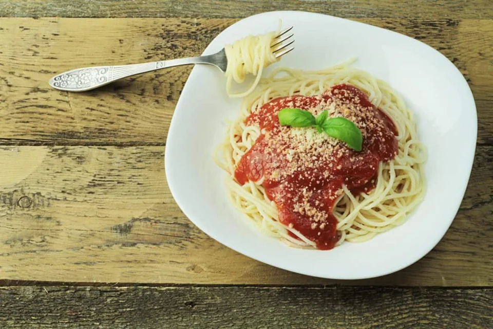

BUFFET A DOMICÍLIO · CIDADE EXEMPLO
Uma mesa para celebrar
Neste exemplo, apresentamos festa e estação de massas. O cardápio é fictício; a fotografia é ilustrativa e disponibilizada sob CC0.
Conversar sobre massas ↗
ANTES DE FECHAR
O que vale perguntar.
- Tipos de massa
- Molhos e acompanhamentos
- Formato de atendimento
- Estrutura no local
O cardápio completo e as inclusões dependem da proposta da empresa.
Organizar meu pedido de orçamento ↗